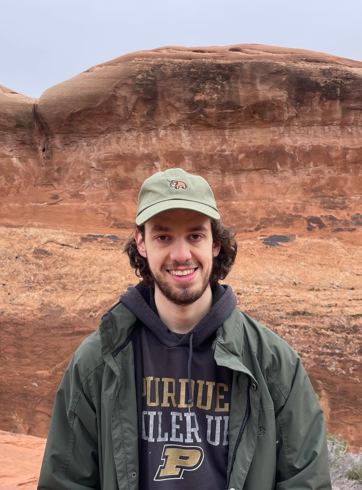

I am an Assistant Professor in the Linguistics Department at the University of Utah. I hold degrees from Purdue University (B.S. 2018) and the University of Michigan (Ph.D. 2023; dissertation). My research falls primarily in theoretical phonology, computational linguistics, language acquisition, and artificial intelligence, though my interests are broader. In my research, I make concrete theoretical proposals about language acquisition and learning and work out their implications for linguistic theory. I use computational, experimental, and corpus-based approaches. You can read more about my research here.
For my research, I have been awarded an NSF GRF, an NDSEG fellowship, a Richard F. and Eleanor A. Towner Prize for Distinguished Academic Achievement (University of Michigan), and a Virgil C. Aldrich Faculty Fellowship (Tanner Humanities Center). I currently serve on the editorial board of Phonology.